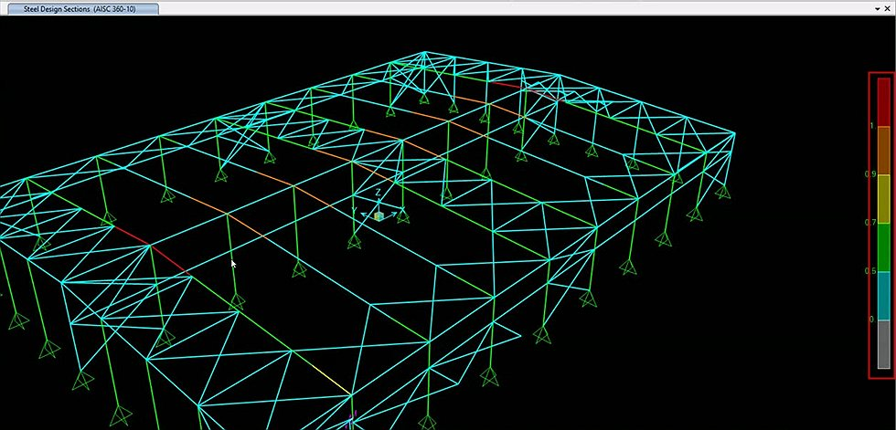
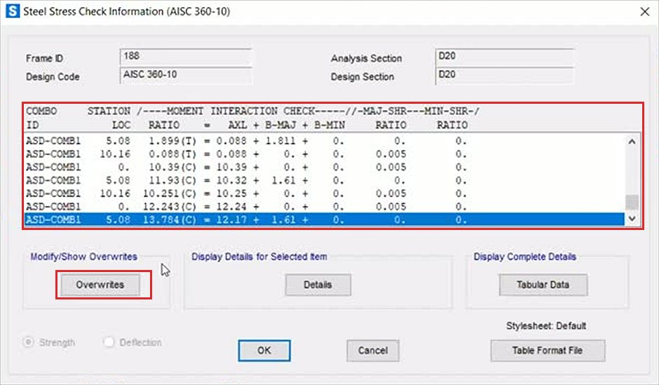

Bài 12.5. Đọc kết quả Reading design results
Một tỷ số (ratio) chưa nói lên điều gì nếu không biết công thức và điều kiện nào quyết định nó. Cửa sổ Details trả lời câu hỏi đó.
- Đọc biểu đồ màu P-M, cửa sổ Details và bảng Steel Design 1 – Summary Data.
- Từ điều kiện quyết định, chọn biện pháp sửa hợp lý (tăng tiết diện hay thêm chống xiên).
1. Tình huống
Biểu đồ màu của nhà máy DNP cho cột C1 màu đỏ, ratio 1,056. Details cho thấy phương trình H1-1b quyết định và $\phi M_n$ bị khống chế bởi mất ổn định xoắn ngang với $L_b$ = 5 m (Chương 13).
2. Nội dung chính
Đọc kết quả
- Biểu đồ màu: Design → Steel Frame Design → Display Design Info → P-M Ratio Colors & Values. Xanh: ratio nhỏ; đỏ: lớn hơn Stress Ratio Limit.
- Details: click phải thanh → Details. SAP hiển thị: phân loại tiết diện (Compact, Noncompact, Slender), $P_r$, $M_{r33}$, $M_{r22}$, $V_r$; $\phi P_n$, $\phi M_n$ kèm các thông số $L_b$, $C_b$, $L_p$, $L_r$; phương trình tương tác đang quyết định (H1-1a hoặc H1-1b).
- Bảng: Ctrl+T → Design Data → Steel Design 1 – Summary Data – AISC 360-10. Xuất Excel để làm thuyết minh.
- Biến dạng: Display → Deformed Shape với tổ hợp DEFLECTION, DISPLACEMENT (Envelope), xem Chương 14.
3. Thực hành SAP2000
- Design
- Steel Frame Design
- Start Design/Check of Structure
- Display Design Info
- P-M Ratio Colors & Values

- Design
- Steel Frame Design
- Start Design/Check
- chuột phải vào phần tử
- Steel Stress Check Information
- Details

4. Lỗi thường gặp
Lỗi thường gặp
- Chọn Provision = ASD nhưng Design Combos là LRFD, hoặc ngược lại.
- Để Framing Type = SMF cho nhà xưởng thông thường.
- Không khai báo $L_b$ nên SAP lấy cả chiều dài kèo, hoặc khai báo gần 0.
- Quên chọn tổ hợp Deflection.
- Đọc ratio mà không xem Details nên không biết điều kiện nào quyết định.
5. Luyện tập
Để xuất bảng tổng hợp kết quả thiết kế thép sang Excel làm thuyết minh, dùng bảng nào?
Gợi ý
Xem gạch đầu dòng "Bảng".
Lời giải
Ctrl+T → Design Data → Steel Design 1 – Summary Data – AISC 360-10, rồi xuất Excel.
Details của một cột cho $P_r/P_c = 0{,}15$; $M_{r33}/M_{c33} = 0{,}70$; $M_{r22} = 0$. Tính tỷ số tương tác SAP báo.
Gợi ý
$P_r/P_c \lt 0{,}2$ → H1-1b.
Lời giải
$0{,}15/2 + 0{,}70 = 0{,}775$.
Cột C1 có ratio 1,056; Details: H1-1b quyết định, $P_r/P_c = 0{,}107$, $\phi M_n$ khống chế bởi LTB với $L_b$ = 5 m. Biện pháp hợp lý nhất là:
Gợi ý
Thành phần nào chiếm phần lớn tỷ số? Điều gì khống chế $\phi M_n$?
Lời giải
Mô men chiếm 1,003/1,056 và LTB khống chế → giảm $L_b$ (chống xiên) hiệu quả nhất; với $L_b$ = 4,2 m ratio còn 0,949.
- Biểu đồ màu cho cái nhìn tổng thể; Details cho biết phân loại tiết diện, $L_b$, $C_b$, $L_p$, $L_r$ và phương trình quyết định.
- Bảng Summary Data xuất Excel cho thuyết minh; chuyển vị xem bằng tổ hợp Deflection (Chương 14).